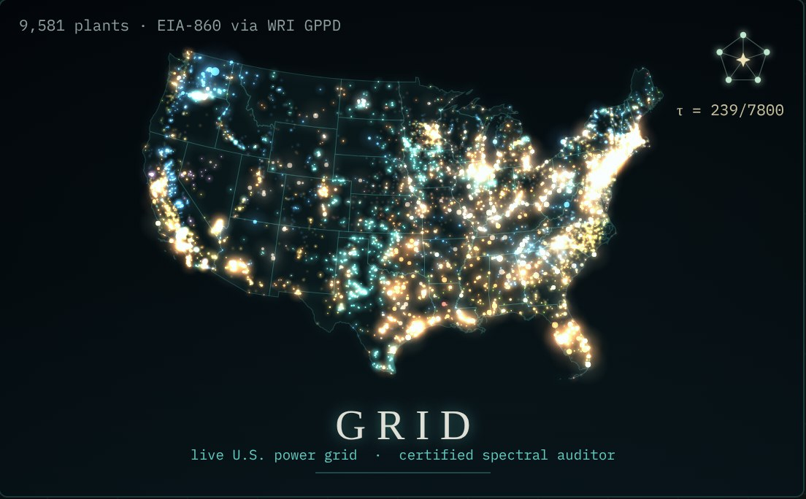

Opening the grid · public sources, read live
Skip to the monitor
◇ The Mathematical City · Instrument
Grid
Live U.S. power grid · certified spectral auditor
Map
Fly
Auditor
Formalism
Sources
Global Atlas ↗
SEE ↗
--:--:-- UTC
⌕
Search
Alerts
LIVE
0/0
GPS · locating
AUDITOR ·
starting
HDG 000°
GS 000 kt
ALT 0000 ft
AGL 0000 ft
--
Nearest infrastructure · loading
W/S pitch · A/D roll · Q/E yaw · Z/X throttle · R/F altitude · P line patrol · Esc exit
▲
HOLD AGL
13,000 ft
▼
Layers
Panels
↑↓ choose · ↵ open · Esc close
Places: © OpenStreetMap Nominatim
Grid is a live instrument and needs JavaScript. The data sources it reads are listed in
README.md
.